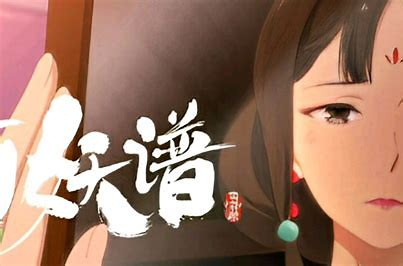

剧情介绍
灵医桃夭，善恶如谜。金铃过处，片甲不留。讲百种妖怪，述世间沧桑。她是所有妖怪的救星，也是所有妖怪的噩梦。她带着磨牙小和尚行走江湖，也是灵医桃夭。桃都灵医桃夭只治妖怪不治人，她带着小和尚磨牙一起云游四方，顺道给各路妖怪治病。
磨牙的跟班狐狸滚滚，加上她们的老邻居蛇妖柳公子，也先后加入结伴而行，在这妖怪横行、惊险重重，却又让人眷念的人间大显神通，为周围的妖怪治疗各种疑难杂症，也为这些妖怪周围的人类排忧解难。桃夭、磨牙和柳公子之间的关系不显山不露水，更多稀奇古怪的问题等着这个小团队一起去探索解决。
冰山的一角可以窥探整个故事的磅礴精致，这是一场华丽未知的探险。同主角们一起，把一个个寓言般的小故事串联成一个精彩纷呈的大千世界……
分集剧情
第壹回·灰狐（上）
一名灰衫公子在成都郊外的一家客栈等人，不料这客栈是妖怪的巢穴，所有吃食都被下了药。就在大家中招晕过去、几人被吃掉时，隔壁桌一个红衣小姑娘出来干净利落地打倒了妖怪。原来她是灵医桃夭，而灰衫公子要等的人就是她。灰衫公子得了病，要请桃夭来治。桃夭还没答应，灰衫公子就晕了过去。桃夭使出能力“解铃术”，读取灰衫公子的记忆。
原来灰衫公子是狐妖所化。在他还是一只小狐狸时，曾经与一名人类少年有过一段令人唏嘘的过往。
第贰回·灰狐（下）
那名少年变成了他最不想成为的人，而狐妖为了救他吞下两万冤魂的怨气，导致现在病入膏肓。桃夭看完记忆后，最终答应帮灰衫公子治病。获救的灰衫公子退化成一只失去记忆和妖力的小灰狐，被桃夭带走了。
第叁回·潄金（上）
城中有一元宝堂，专做死人生意，提供各类折纸烧供离世之人。两年前的大年夜，朱小宝提着两块辟寒金来找叶老板学折纸之法......年复一年，终在一日叶老板的逼问下，朱小宝道出了漱金鸟......一年前冬至，朱大娘还是不幸因病去世，叶老板随朱小宝来到朱大娘的墓前，听朱小宝讲起了曾经的事......
第肆回·潄金（下）
漱金鸟飞到朱家鸡窝，因喜爱朱大娘质朴纯真的笑容而留下来陪伴着朱家成长。朱小宝一心只想赚钱给朱大娘过上好日子，却渐渐失去了陪伴朱大娘的时光，丢失了想给朱大娘带来快乐的初心，朱大娘脸上的笑容也日益逝去。
一年朱小宝前去参军，却也在战场上送了性命，漱金鸟来到战场上附身朱小宝，回到家中陪伴朱大娘度过余生，却也因附身人身而失去了长久的生命......
第伍回·蜉蝣（上）
被家人遗弃的狼人独自到人间生活，却不知人心的丑陋。被骗无数次的狼人选择跳入湖中自杀，却砸到了蜉蝣少女……
第陆回·蜉蝣（下）
被砸到的蜉蝣少女领着狼人去玩，相处一天后一起拜了天地。第二天狼人醒来发现少女不见了一直想找到她，桃夭告诉狼人这个少女是一种妖怪名为蜉蝣，成为妖怪时寿命只有一天。
第柒回·庆忌（上）
桃夭一行人前去镜花泽，谁知镜花泽成了泥潭。镜花泽的妖怪庆忌中毒，一直等一个叫小苗的少年几十年。
第捌回·庆忌（下）
桃夭一行人前往小苗的村庄，找到他的朋友，得知小苗早已去世多年。小苗的朋友吧小苗的手扎给了桃夭，桃夭便给了庆忌。从手扎中得知庆忌发挥日行千里的能力会死掉。
也得知小苗受到仇家的诅咒活不过十四岁。庆忌便离开镜花泽遨游世界。堂，专做死人生意，提供各类折纸烧供离世之人。两年前的大年夜，朱小宝提着两块辟寒金来找叶老板学折纸之法......年复一年，终在一日叶老板的逼问下，朱小宝道出了漱金鸟......一年前冬至，朱大娘还是不幸因病去世，叶老板随朱小宝来到朱大娘的墓前，听朱小宝讲起了曾经的事......
第玖回·乖龙（上）
在河上桃夭、磨牙和滚滚的船突然被雷劈，柳公子把他们救出。得知被雷劈是因为船下面躲着一只乖龙，桃夭要为乖龙疗伤，乖龙要三天后再疗。留着伤口要对付旱仙，桃夭、磨牙、滚滚和柳公子随乖龙来到一个村庄抓到旱仙。旱仙出现乖龙用自己的血攻击它，但旱仙还有另外一个替身，乖龙再次被雷劈中。
第拾回·乖龙（下）
乖龙醒来，向桃夭和磨牙讲述阿忙的事，之前乖龙偷偷下凡去到阿忙家中避雨。一阵子后阿忙的奶奶病了，阿忙祈求土地公公，乖龙被阿忙误以为是土地公公，乖龙并答应病一定能好。因为运气好奶奶恢复了，阿忙自己种甘蔗田并再次祈求土地公公，乖龙这次没有说话。就当甘蔗长出苗时，旱仙来到飞鱼村，乖龙为了不让阿忙失望决定阻止旱仙。就在乖龙讲完事情的经过后，柳公子用乖龙的血抓住了旱仙。过了一会雷神把乖龙和旱仙一起带回天界。
第拾壹回·腾根（上）
桃夭拿着身上所以的钱去神女阁求姻缘，神女阁见桃夭太穷把她赶了出去。桃夭不小心碰碎了张大伯的瓷器，张大伯要桃夭赔钱张大婶制止。两人把桃夭、磨牙和滚滚带回家并给了下了药的饭菜。张大婶夜晚潜入甄府喂甄小姐药桃夭也偷偷尾随，却遇到了神女阁的人。神女阁的都是妖怪对张大婶出手，也看到了桃夭也对她出手。然后腾根出现救下两人。腾根竟是张大伯。三人回家后得知张大婶是蛊师族的后人。第二天张大婶给桃夭送饭桃夭询问你什么时候对张大伯种了蛊母让他离不开你的。
第拾贰回·腾根（下）
张婶讲述当年自己一族被灭，下山让村民知道自己是蛊师族的人被村民追杀，被小张救下。并和他一起除蛊。当小张对张婶说自己要回家，张婶下了决心对小张下了蛊母。桃夭告诉了张大伯，张大伯有没有杀掉张大婶。柳公子询问桃夭为什么这么反常，桃夭说百妖谱丢了，现在到人间各处找找。
作品评价
写百妖，历百事，通百情，从传说故事中发掘出新意，传递真与善的情感追求。动画在画风方面保持了东方美感，一些场景中还加入了水墨风的元素。而《百妖谱》后续的故事中，还将传递更多细腻的情感洞察：漱金篇通过一个温馨淡泊的故事展现了亲情和陪伴的重要价值，庆忌篇则展现了对信义和承诺的坚守，
一个又一个娓娓道来的故事，传达真善美的主旨。灰狐、漱金、庆忌等妖的原型来自于我国古代神话，可以说是从传统文化中汲取养分，衍生一种诉诸情感的全新解读。（人民网 评）
章节目录
壹 灰狐
贰 漱金
叁 庆忌
肆 蜉蝣
伍 乖龙
陆 腾根
